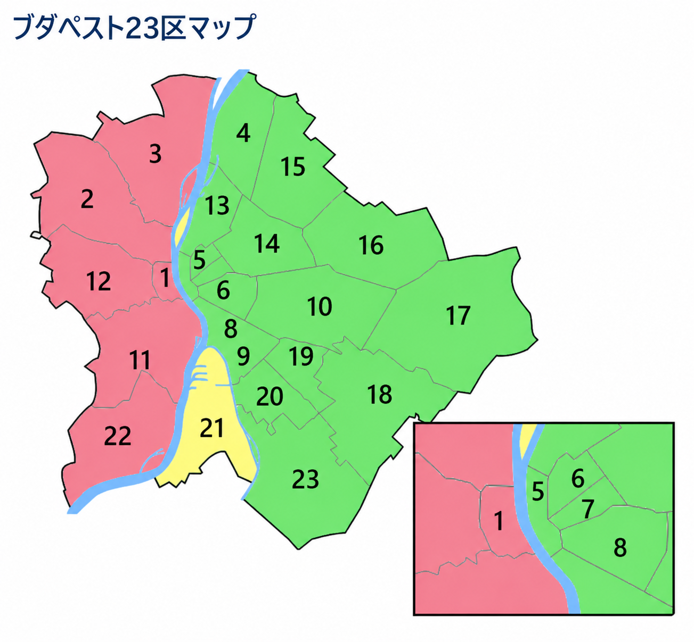

ブダペスト23区マップ

出典: Wikimedia Commons / CC BY-SA
ブダペストは、ドナウ川を境に「ブダ（西側）」と「ペスト（東側）」に分かれています。
まずこれだけ（30秒で理解）
- 西側＝ブダ（住宅・落ち着いている）
- 東側＝ペスト（大学・中心・便利）
- 留学生は基本ペスト側に住む
ブダ側（西側）
ブダ側は丘や住宅街が多く、静かで落ち着いたエリアです。 治安も良く、ファミリー向けの地域が多いのが特徴です。
ペスト側（東側）
ペスト側は、大学・商業・観光の中心です。 留学生の多くはこのエリアに住みます。
重要なエリア
| 区 | 特徴 | おすすめ |
|---|---|---|
| 5区 | 中心・観光地 | △ |
| 6区 | 人気エリア | ◎ |
| 7区 | ナイトライフ | △ |
| 8区 | 家賃安い | ◎ |
| 9区 | バランス良い | ◎ |
まとめ
ブダペストは23区ありますが、留学生に重要なのは一部です。 ペスト側の8区や9区が現実的な選択になります。